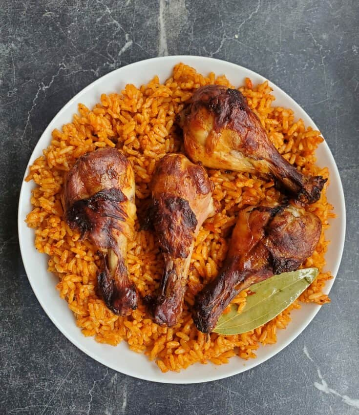
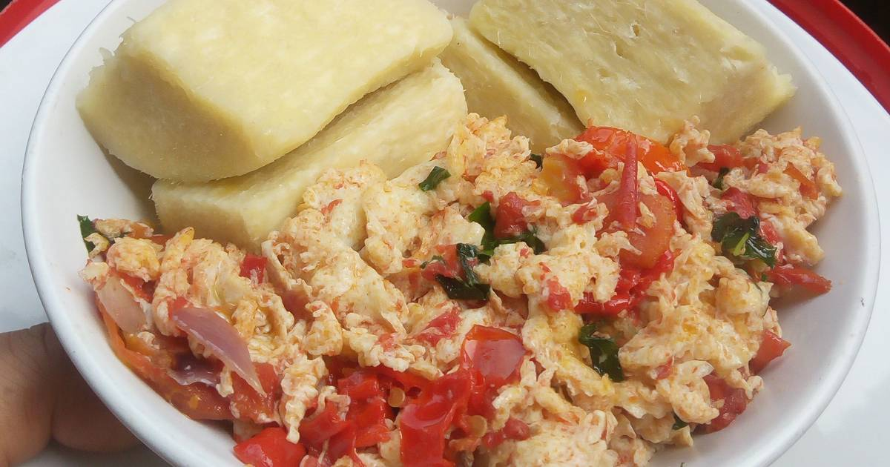
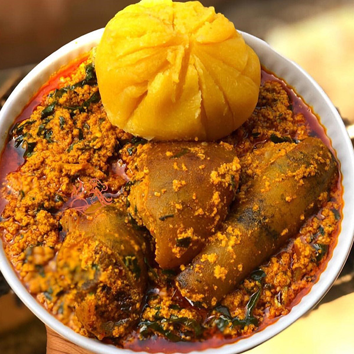
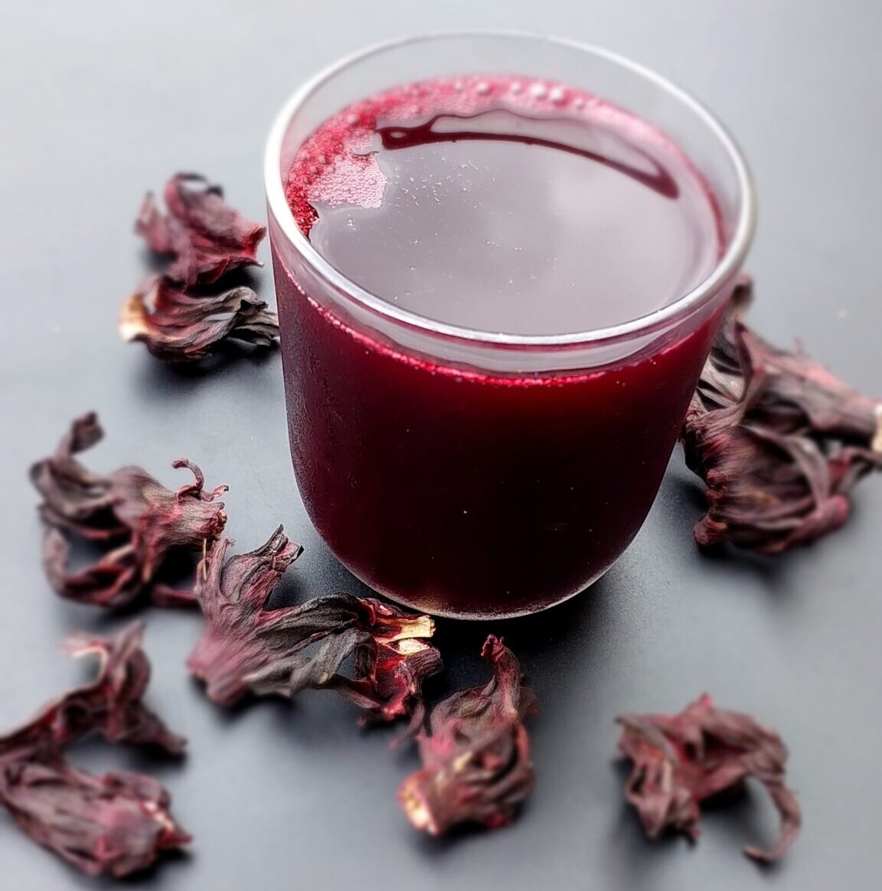
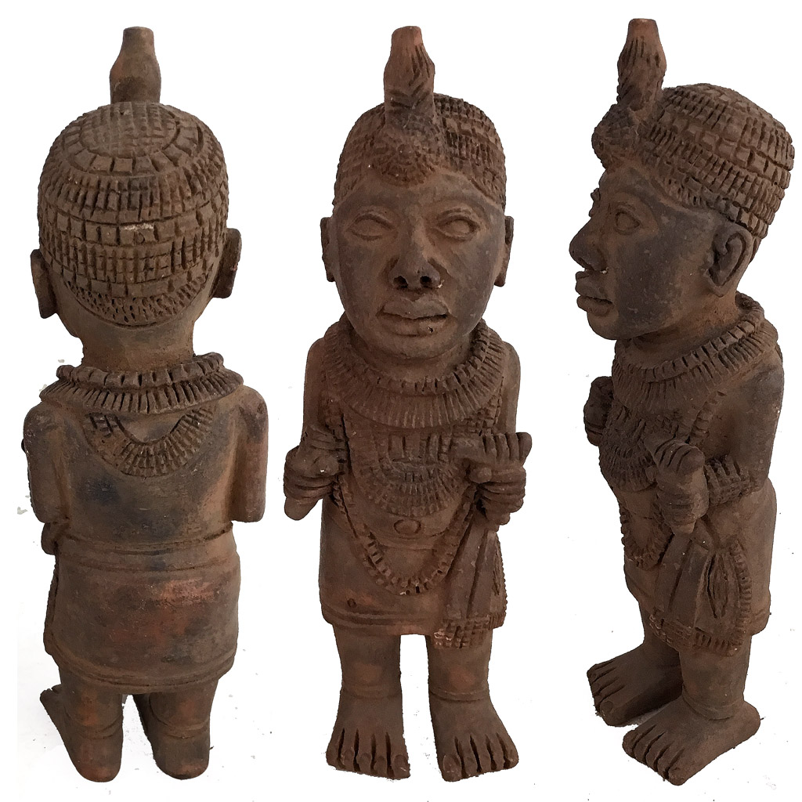
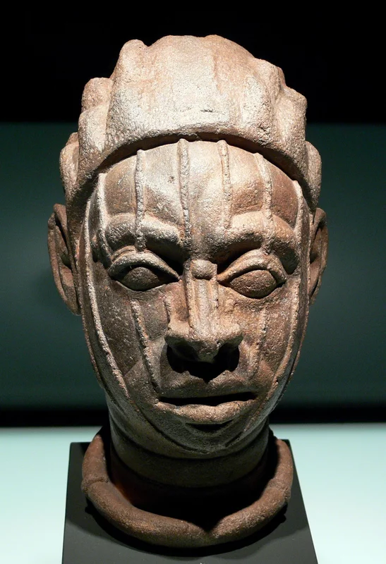
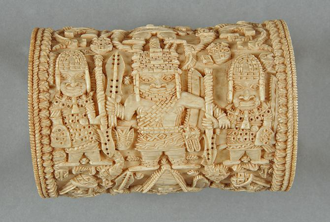

Culture
The perfect balance between people and history
Nigerian culture is a colourful mix of diverse ethnic groups, which including the Hausa, Yoruba and Igbo tribes each with their own unique traditions, languages and art. The country is known for its music like Afrobeat, colorful festivals and rich cuisine such as jollof rice and suya. Traditional dance, storytelling and Nollywood films also play a key role in shaping Nigeria’s cultural identity.
Discover the Rich Tapestry of Nigerian Culture
Nigeria's cultural heritage is a dynamic tapestry shaped by centuries of history, tradition, and artistic expression. Located at the heart of West Africa, Nigeria has developed a distinct identity, blending diverse ethnic influences with a rich legacy of resilience and creativity. From its flavourful cuisine to captivating folklore, every element of Nigerian culture reflects a nation that honours its past while looking toward the future. Explore the depth and vibrancy of Nigeria’s cultural legacy.

Nigerian Cuisine
Argueably the best way to experience Nigerian culture is through its flavorful cuisine.
Jollof rice is a savory and vibrant rice dish cooked with tomatoes, peppers and spices. It's warm, flavorful and always served with a side of fried plantains or grilled meats making it the perfect representation of Nigerian hospitality and the joy of sharing a meal with loved ones.
A fragrant dish made with tomatoes, peppers and spices, symbolizes warmth and celebration.
Jollof Rice
A fragrant dish made with tomatoes, peppers and spices, symbolizes warmth and celebration.
Jollof with grilled meats

Jollof with plantain
Egg and yam, a popular Nigerian dish features boiled yam paired with fried or scrambled eggs.
Yam and Egg
Eba is a staple dish in many West African cuisines made from fermented cassava flour mixed with hot water to form a smooth, dough-like consistency.
Eba
Zobo is a vibrant, tangy drink made from dried hibiscus.
Zobo
Sacred Art
Ancient Nigerian art includes the Nok terracotta sculptures, famous for their detailed human figurines (1000 BCE – 300 AD), the realistic bronze and terracotta heads of Ife (12th – 15th centuries) and the intricate bronze plaques and ivory carvings of Benin (14th century onwards). These artworks were deeply tied to spirituality, royalty and cultural traditions.
Terracotta Sculptures
Bronze And Terracotta heads
Ivory Carvings